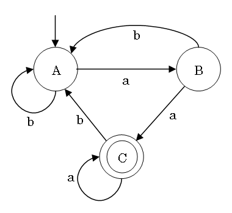
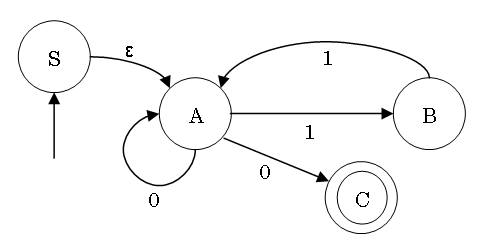
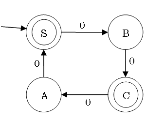
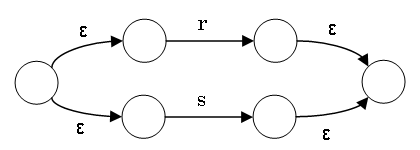
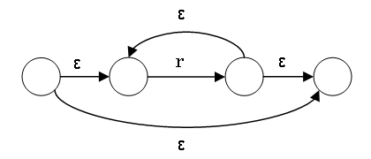

言語理論とコンパイラ
第三回:
有限オートマトンと線形文法
2005年 5月 6日

© 2005 Martin
J. Dürst 青山学院大学
宿題 (5月12日 11:00 まで提出)
提出は A4 の紙一枚 (裏も使ってよい)
- 次のプログラムの一行の字句解析の結果
(トークンの列)、構文解析の結果 (構文木)、出力
(マシーンへの命令) を書きなさい
total = number * unitprice * (100 + tax) / 100;
- (提出なしだが、出来なかった人は次回ノートパソコンを持ってきてください。)
自分のノートパソコンに cygwin をダウンロード、インストールしてください。インストールの手順で必ず
flex と bison
を選んでください。(家にダイアルアップ回線しかなかったら学校でやった方がよい。)
先週の終わり
| 文法 |
Type |
言語 |
オートマトン |
| 句構造文法 |
0 |
句構造言語 |
チューリング機械 |
| 文脈依存文法 |
1 |
文脈依存言語 |
線形拘束オートマトン |
| 文脈自由文法 |
2 |
文脈自由言語 |
プッシュダウンオートマトン |
| 正規文法 |
3 |
正規言語 |
有限オートマトン |
正規言語は字句解析の時に使う。
今週の展望
- 有限オートマトン (finite state automaton, FSA)
- 決定性有限オートマトン (deterministic finite automaton,
DFA)
- 非決定性有限オートマトン (non-deterministic finite
automaton, NFA)
- 正規文法 (regular grammar)
- 左線形文法 (left linear grammar)
- 右線形文法 (right linear grammar)
- 正規表現 (regular expression)
これらは全て同じ力を持って、正規言語を定義・受理する
有限オートマトン
- スタート状態から始まる
- 入力の語を繰り返して一字読んで、これによって状態を遷移する
- 語を読み終わった時に受理状態にいるとこの語が受理される
- 語を読み終わった時に受理状態にいない、もしくは途中で動作ができない場合に語が受理されない
- 状態の数が有限である
(すなわち、メモリは制限されている)
(automaton はギリシア語で、複数は automata)
有限オートマトンの状態遷移図

有限オートマトンの遷移表
(≈動作関数=状態遷移関数)
有限オートマトンに必要な物
- 状態の有限集合 (Q、図の円)
- 入力記号の有限集合
(Σ、図の矢印のラベル)
- 動作関数 (δ、図のラベル付き矢印)
- 初期状態 (q0 ∈ Q、図の
(二重) 矢印)
- 受理状態の有限集合 (F ⊆
Q、図の二重円)
有限オートマトンは (Q, Σ, δ, q0, F)
の五字組で定義できる。
決定性と非決定性有限オートマトン
|
決定性 |
非決定性 |
| 同時に |
一つの状態 |
複数の状態 |
| 受理条件 |
状態が受理状態 |
状態の一つ以上が受理状態 |
| ε 遷移 |
不可 |
可能 |
| 動作関数の型 |
δ: Q × Σ → Q |
δ: Q × (Σ ∪ {ε}) →
2Q |
(決定性) 有限オートマトンの例
- ある一個の語だけ受理できる
- ある記号の数が奇数、偶数、3で割れば余りが
2、等
- 語の先頭に決まった記号列がある
- 語の終わりに決まった記号列がある
- 語の真ん中に・どこかに決まった記号列がある
- 語の中にある記号列が潜んでいる
- 二つ以上の条件を同時に満たすもの
NFA から同等の DFA への変換
アルゴリズムの原理:
- NFA の状態の集合が DFA の状態に
- NFA の初期状態とそこから ε
遷移でいける状態の集合が DFA の初期状態
- NFA の受理状態を一つ以上含まれる DFA
の状態が受理状態
全ての DFA は NFA でもある。全ての NFA は同等の DFA
に変換できる。
よって、DFA と NFA の受理能力が等しい。
実装は DFA
の方が簡単が、テーブルは大きくなる可能性がある。
NFA から同等の DFA への変換の一例

動作関数
|
ε |
0 |
1 |
| S |
{A} |
{} |
{} |
| A |
{} |
{A,C} |
{B} |
| B |
{} |
{} |
{A} |
| C |
{} |
{} |
{} |
DFA の最小化
ある DFA から同等の最小の DFA を次の通りに作れる:
- 状態を受理状態と非受理状態の二つの集合に分ける
- それそれの状態からどの記号でどの集合に遷移するかを調べる
- 現在の集合を、どの記号でも同じ集合に遷移する状態の部分集合に分ける
- 3. で変更がない時まで 2. から繰り返す
最小化によって効率よい実装ができるし、二つの有限オートマトンが同等であるかどうかも簡単に調べられる。
DFA の最小化の一例

文法の定義
- 非終端記号の有限集合 N
- 終端記号の有限集合 Σ
- 書換規則の有限集合 P (生成規則ともいう)
- 開始記号 S (S ∈ N,
初期記号とも言う)
文法は (Q, Σ, δ, q0, F)
の四字組で定義できる。
書換規則は一般には悲終端記号と終端記号の列から悲終端記号と終端記号の列への規則になっている。
線形文法
文法の簡単な書換規則
| 規則の形 |
名称 |
| A → aB |
左右線形規則 |
| A → Ba |
右左線形規則 |
| A → a |
定数規則 |
左線形文法: 左線形規則と定数規則しか含まない文法
右線形文法: 右線形規則と定数規則しか含まない文法
左・右線形文法はともに線形文法と言い、正規文法とも言う
(左) 線形文法と有限オートマトン
左線形文法と NFA の対応 (ε が考慮外):
- 状態は非終端記号と対応
- 初期状態は初期記号と対応
- 受理状態に遷移する動作は定数規則と対応
- 全ての動作は左線形規則と対応
右線形文法も同様
(語を右から読み込むと考えられる)
左線形文法と有限オートマトンの一例
A → aB | bA
B → bA | a | aC
C → bA | a | aC
正規表現の例
計算機実習 I の演習問題: ある文章中に
&, ", ',
<, > を見つけて、それぞれ
&, ", ', <,
> に変換せよ。
Perl で書くと次のようになる:
s/"/"/g;
s/'/'/g;
s/</</g;
s/>/>/g;
s/&/&/g;
正規表現の形式定義
アルファベットΣ 上の正規表現と表す言語
| 正規表現 |
条件 |
言語 |
備考 |
| ε, a |
a ∈ Σ |
{ε} 又は {a} |
|
| r|s |
r, s が正規表現 |
L(r|s) = L(r) ∪ L(s) |
集合和 |
| rs |
r, s が正規表現 |
L(rs) = L(r)L(s) |
連結 |
| r* |
r が正規表現 |
L(r*) = (L(r))* |
閉含 |
| (r) |
r が正規表現 |
L((r)) = L(r) |
|
L(r) は r
によって表されている言語。優先度は下の方が強い。
正規表現を定義する言語は文法で書けるが、正規表現は文法と違って規則は一つしか使わない。
実用化された正規表現
正規表現の便利な追加機能
- .: 字一個 (a|b|c|...)
- r+: 一個以上の r (rr*)
- r?: r の有無 (r|ε, その代わり ε は使わない)
- r{m,n}: m 個以上 n 個以下の r (r...rr?...r?)
- [b-f]: b から f の字 (b|c|d|e|f)
- \* 等: \ はエスケープに使われる
正規表現の使い方による変更
- 語全体のではなくその一部をマッチ
- ^ と $ で語の先頭と最後をマッチ
- 括弧に相当する部分語を変数に代入
正規表現から NFA へ (1)
正規表現に対応する NFA
は正規表現の部分表現から再帰的に作られる。
ε と a に対応する NFA
は初期状態一つと受理状態一つとそれを結ぶ ε 又は a
と書かれた矢印。
r|s の NFA は r の NFA と s の NFA から次のようにつくる:

正規表現から NFA へ (2)
rs の NFA は r の受理状態と s の初期状態を ε
で結んで、r の初期状態は rs の初期状態、s の受理状態は
rsの受理状態。
r* の NFA は次のようにつくる:

NFA や DFA から正規表現を作るのも可能だが、複雑。
今週のまとめ
- 正規表現、線形・正規文法、有限オートマトンは皆同じ表現・受理能力を持つ。
- DFA による効率良い受理プログラムが作れる。
- 正規表現のコンパクトな定義方法がある。
- これらは字句解析に有効に使える。
- しかし、これらに表現できない言語がある。状態の有限な数によって、例えば一般の括弧の対応する言語は判定できない。